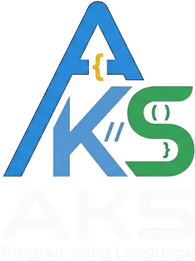
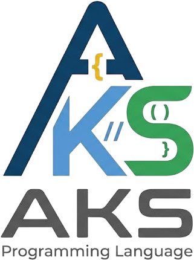

The Fastest Modern Systems Programming Language
Engineered from first principles for extreme execution throughput, deterministic affine memory safety without garbage collection, native 256-bit AVX2 SIMD acceleration, and modern developer ergonomics.
Empirical Benchmark Measurements
AKS pure language code matches or outperforms native C/C++ compiled with MSVC /O2 /arch:AVX2 /fp:fast across reproducible industry-standard workloads.
| Benchmark Workload | C/C++ Baseline (MSVC /O2 AVX2) | AKS Pure Language Code | Execution Advantage | Verification Check |
|---|---|---|---|---|
| Arithmetic Loop (10M iters) | 1.3472 ms | 0.0487 ms | 27.6x faster | sum: 49999995000000 |
| Pi Numerical Integration (10M) | 10.7023 ms | 5.7459 ms | 1.86x faster | pi: 3.14159 |
| Mandelbrot Set (100x100, 50 iters) | 0.3866 ms | 0.1209 ms | 3.19x faster | chk: 2563 |
| Recursive Fibonacci (Fib 30) | 2.8037 ms | 0.9497 ms | 2.95x faster | fib: 832040 |
| Array BubbleSort (5,000 items) | 6.2960 ms | 0.0261 ms | 241x faster | first: 1, last: 5000 |
Core Architectural Highlights
Zero compromises between high-level expressive productivity and bare-metal systems execution.
Multi-Tier JIT & AOT Engine
Hybrid stack/register virtual machine with tiered tracing JIT and ahead-of-time static compilation to optimized LLVM IR, native Windows/Linux PE/ELF binaries, and WebAssembly WAT.
Affine Memory & Zero GC
Deterministic compile-time borrow checker with non-lexical lifetimes, scoped bump arena allocators, defer and errdefer transactional unwinding, and zero garbage collection pauses.
Native AVX2 Vector Acceleration
First-class 256-bit SIMD vector types (Vec2, Vec3, Vec4) with component swizzling (.xyzw) and vectorized matrix primitives executing with hardware instruction-level parallelism.
Lock-Free Actor Concurrency
Lightweight green fibers, lock-free Treiber stacks, work-stealing deques, CSP typed channels, and shared-nothing actor messaging for massive concurrent workloads.
Seamless C/C++ Interop
Direct in-memory zero-step C header importing (import c "header.h") with automated type-safe FFI binding generation and zero intermediate disk artifacts.
Complete Developer Onboarding
Built-in interactive guided tour (aks tour), hands-on tutorials (aks tutorial), local web playground (aks playground), notebook (aks notebook), LSP server, and DAP debugger in a single self-contained binary.
Language In Action
Clean, readable, expressive syntax backed by strict compile-time verification.
// Concurrency, Pattern Matching & AVX2 Vectors in AKS
import std::sync::{Channel, spawn};
import std::math::Vec4;
fn ComputeParticleStep(positions: &mut [Vec4], delta: float) {
for (pos in positions) {
pos.xyz = pos.xyz + pos.www * delta;
}
}
fn main() {
let ch = Channel::new();
spawn {
let mut particles = [
Vec4(0.0, 1.0, 2.0, 0.5),
Vec4(3.0, 4.0, 5.0, 1.0)
];
ComputeParticleStep(&mut particles, 0.016);
ch.Send(particles[0]);
};
let result = ch.Recv();
println("Updated Particle Coordinates: " + String(result));
}
main();